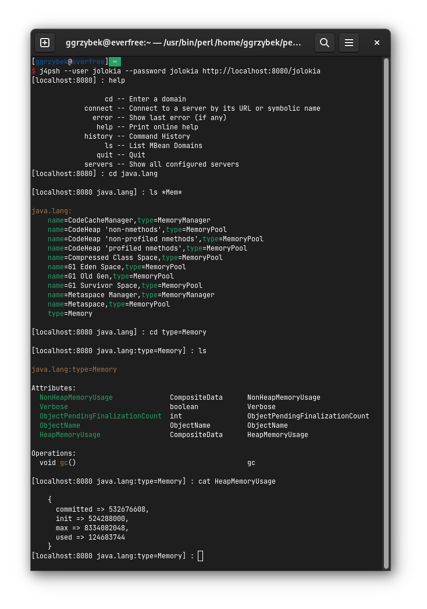

$ tar zxvf apache-tomcat-7.*.tar.gz
$ cd apache-tomcat-7.*
$ TC=`pwd`5 Minute Quickstart
In this tutorial, it will be demonstrated how easily a WAR agent can be installed on a fresh Tomcat, how to verify the installation and how to access the client.
Preparation
In order to start on a green field, we are installing a fresh Tomcat in which the agent-war is going to be installed. Download Tomcat 7 from its site and extract it:
Download the Jolokia WAR-agent and copy it into Tomcat’s webapp directory:
$ cd $TC/webapps
$ wget \
https://repo1.maven.org/maven2/org/jolokia/jolokia-war/1.2.3/jolokia-war-1.2.3.war
$ mv jolokia-war-1.2.3.war jolokia.warStartup and Verification
Now the container can be started with:
$ $TC/bin/catalina.sh startIn order to verify the installation, point your browser to https://localhost:8080/jolokia/version which should show up something like

A simple Java Client
Let’s try out the client side of Jolokia. This example will print out the memory usage of your tomcat:
import org.jolokia.client.*;
import org.jolokia.client.request.*;
import java.util.Map;
public class JolokiaDemo {
public static void main(String[] args) throws Exception {
J4pClient j4pClient = new J4pClient("https://localhost:8080/jolokia");
J4pReadRequest req = new J4pReadRequest("java.lang:type=Memory", "HeapMemoryUsage");
J4pReadResponse resp = j4pClient.execute(req);
Map<String,Long> vals = resp.getValue();
long used = vals.get("used");
long max = vals.get("max");
int usage = (int) (used * 100 / max);
System.out.println("Memory usage: used: " + used +
" / max: " + max + " = " + usage + "%");
}
}Save this code-snippet under JolokiaDemo.java. Then download
and put it into the same directory as this demo class. Finally, compile the demo and let it run:
$ export CLASSPATH=json-simple-1.1.1.jar:jolokia-client-java-1.2.3.jar:\
httpcore-4.3.3.jar:httpclient-osgi-4.3.3.jar:commons-logging-1.1.1.jar:.
$ javac JolokiaDemo.java
$ java JolokiaDemo
Memory usage: used: 9526648 / max: 129957888 = 7%If you are using Maven, please don’t worry about the dependencies which just have been downloaded manually for the sake of demonstration. Jolokia’s Java client library comes with a well defined dependency set, so Maven will do the magic. (In fact, the client library only depends on jsons-simple and http-components directly)
Install Jmx4Perl
The five minutes are probably over now, but I highly recommend to install jmx4perl right now. Beside providing a Perl language binding for Jolokia, there are some cool command line tools included which are useful on their own.
-
jmx4perl is a command for exploring the JMX space by providing arguments on the command line.
-
j4psh is a readline based, colored, interactive shell with context sensitive command completion on MBean names and attributes/operations. It is a perfect tool for interactively exploring MBeans and their values.
-
check_jmx4perl is a feature reach Nagios plugin for connecting the Jolokia agent with Nagios.
-
jolokia is a supporting script for easy download and configuration of the Jolokia agents.
jmx4perl (and its dependencies) can be easily
installed with cpan if you have Perl installed:
$ perl -MCPAN -e shell
Terminal does not support AddHistory.
cpan shell -- CPAN exploration and modules installation (v1.9205)
ReadLine support available (maybe install Bundle::CPAN or Bundle::CPANxxl?)
cpan[1]> install JMX::Jmx4Perl
...
...
jmx4perl
========
jmx4perl is a command line utility for accessing Jolokia agents
(www.jolokia.org). It can be used for script based exploration
and easy inspection of the JMX space.
Install 'jmx4perl' ? (y/n) [y ]
....You will be asked for each featured script whether it should
be installed in addition to the core Perl modules. Each of
these scripts (jmx4perl, j4psh, jolokia, check_jmx4perl) will
introduce a set of new depedencies of Perl modules which in
turn might depend on other Perl modules or system
libraries. Perl modules are resolved and installed
automatically. The agent management script
jolokia depends on XML::LibXML
which requires a development version of libxml
installed locally. It is recommended to install
libxml2-dev with the package management tool of
your OS (e.g. apt-get install libxml2-dev
). Alternatively, the OS package for XML::LibXML could be
used. (e.g. libxml-libxml-perl for
Ubuntu)
When jmx4perl is installed, try out jmx4perl:
$ jmx4perl https://localhost:8080/jolokia list
....
$ jmx4perl https://localhost:8080/jolokia \
read java.lang:type=Memory HeapMemoryUsage
$ jmx4perl --help
$ man jmx4perlNext, I recommend to try out j4psh. For
getting the best readline experience, it is recommended to
also install Term::ReadLine::Gnu (which in turn
requires the package libreadline-dev to be
installed), but this is optional. Now, fire up j4psh and let
the fun begin:

Don’t forget to try out TAB triggered command and argument completion as demonstrated in this screencast.
Summary
That’s all for now, I hope you enjoyed this first ride. For the next steps I recommend to have a look into reference manual.